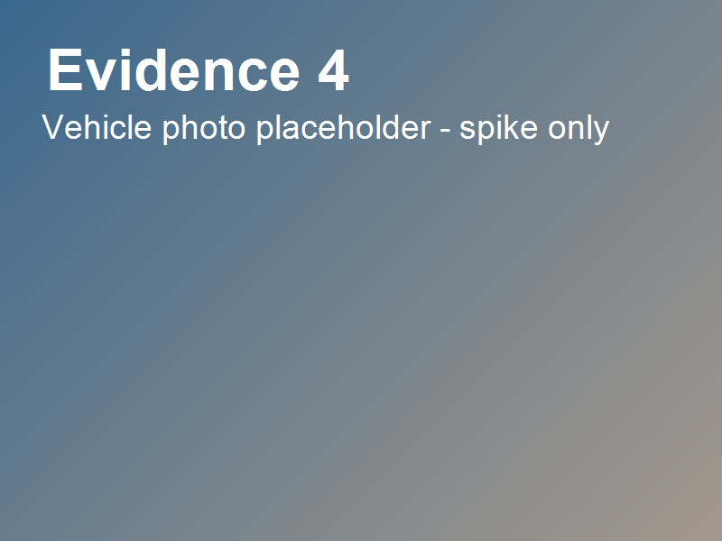
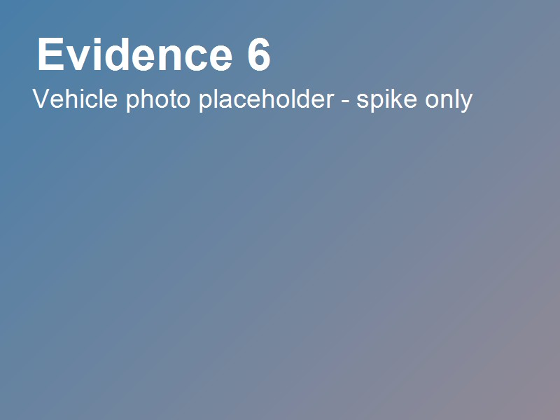
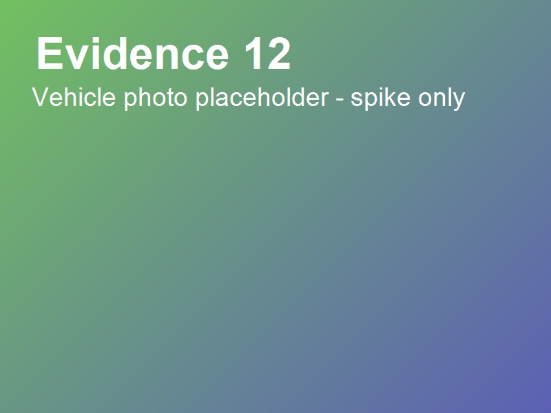
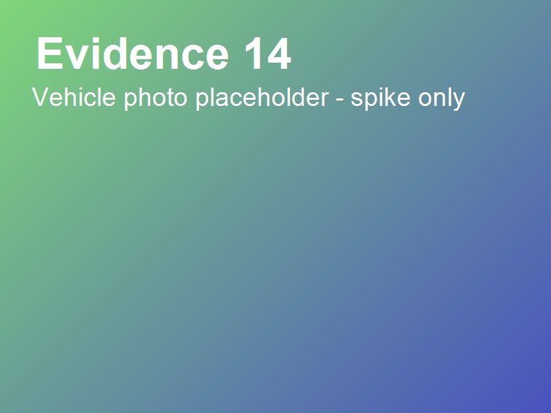
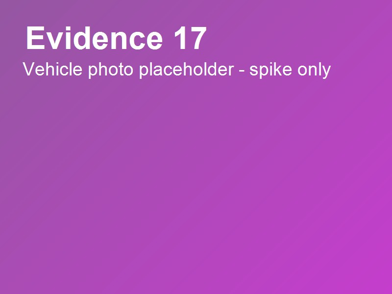
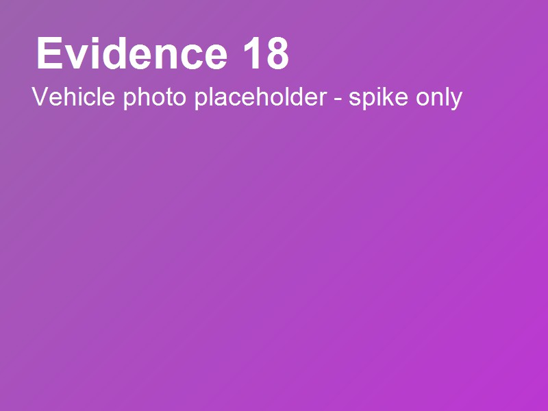
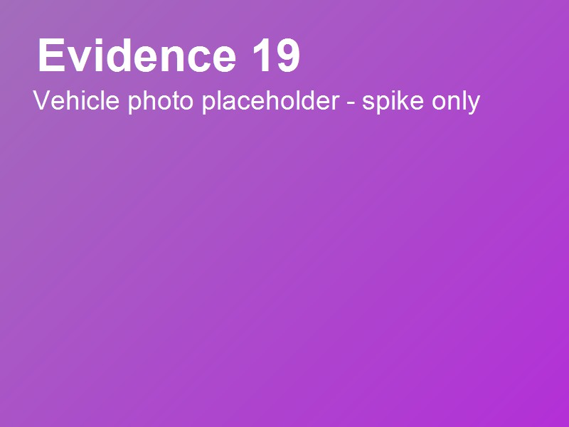
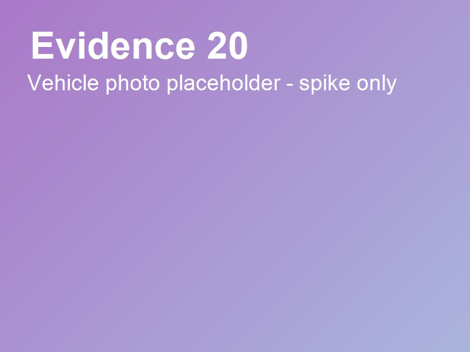

تقرير فحص مركبة
TR-2026-0001 · v1 · 2026-11-03 14:30 GST
ورشة دبي للفحص الفني — Dubai Technical Inspection Workshop
تويوتا لاند كروزر 2022 — Toyota Land Cruiser 2022
VIN WUAZZZGY4NA901440 · 82,902 km
ملخص الفحص / Inspection summary
تم فحص المركبة في ورشة شريك في دبي. يغطي هذا التقرير الحالة الظاهرة وقت الفحص وبضمن النطاق المحدد فقط. لا يمثل هذا التقرير ضماناً بأن المركبة خالية من العيوب، وليس شهادة فحص رسمية.
The vehicle was inspected at a partner workshop in Dubai. This report records the visible condition at the time of inspection within the defined scope. It is not a warranty or an official inspection certificate.
113 of 120 applicable checks completed.
تم إكمال 113 من 120 فحصاً منطبقاً.
تفاصيل الفحص / Inspection detail
| # | البند / Item | النتيجة / Result | الخطورة / Severity | ملاحظة / Note |
|---|---|---|---|---|
هوية المركبة والاستلام — Vehicle identity and intake | ||||
| 1 | نقطة الفحص 1 Inspection point 1 | لا توجد مشكلة ملحوظة في هذا الفحص No issue observed in this check | Minor | — |
| 2 | نقطة الفحص 2 Inspection point 2 | يوصى بالانتباه Attention recommended | Moderate | — |
| 3 | نقطة الفحص 3 Inspection point 3 | تم اكتشاف عيب Defect found | Major | — |
| 4 | نقطة الفحص 4 Inspection point 4 | لم يتم الفحص Not checked | Safety-critical | تعذر الوصول إلى النقطة. |
| 5 | نقطة الفحص 5 Inspection point 5 | لا ينطبق Not applicable | Minor | — |
| 6 | نقطة الفحص 6 Inspection point 6 | تعذر التحقق Could not verify | Moderate | لم تتوفر أداة القياس. |
| 7 | نقطة الفحص 7 Inspection point 7 | لا توجد مشكلة ملحوظة في هذا الفحص No issue observed in this check | Major | — |
| 8 | نقطة الفحص 8 Inspection point 8 | يوصى بالانتباه Attention recommended | Safety-critical | — |
| 9 | نقطة الفحص 9 Inspection point 9 | تم اكتشاف عيب Defect found | Minor | — |
| 10 | نقطة الفحص 10 Inspection point 10 | لم يتم الفحص Not checked | Moderate | تعذر الوصول إلى النقطة. |
| 11 | نقطة الفحص 11 Inspection point 11 | لا ينطبق Not applicable | Major | — |
| 12 | نقطة الفحص 12 Inspection point 12 | تعذر التحقق Could not verify | Safety-critical | لم تتوفر أداة القياس. |
الهيكل الخارجي والطلاء — Exterior body panels and paint | ||||
| 13 | نقطة الفحص 13 Inspection point 13 | لا توجد مشكلة ملحوظة في هذا الفحص No issue observed in this check | Minor | — |
| 14 | نقطة الفحص 14 Inspection point 14 | يوصى بالانتباه Attention recommended | Moderate | — |
| 15 | نقطة الفحص 15 Inspection point 15 | تم اكتشاف عيب Defect found | Major | — |
| 16 | نقطة الفحص 16 Inspection point 16 | لم يتم الفحص Not checked | Safety-critical | تعذر الوصول إلى النقطة. |
| 17 | نقطة الفحص 17 Inspection point 17 | لا ينطبق Not applicable | Minor | — |
| 18 | نقطة الفحص 18 Inspection point 18 | تعذر التحقق Could not verify | Moderate | لم تتوفر أداة القياس. |
| 19 | نقطة الفحص 19 Inspection point 19 | لا توجد مشكلة ملحوظة في هذا الفحص No issue observed in this check | Major | — |
| 20 | نقطة الفحص 20 Inspection point 20 | يوصى بالانتباه Attention recommended | Safety-critical | — |
| 21 | نقطة الفحص 21 Inspection point 21 | تم اكتشاف عيب Defect found | Minor | — |
| 22 | نقطة الفحص 22 Inspection point 22 | لم يتم الفحص Not checked | Moderate | تعذر الوصول إلى النقطة. |
| 23 | نقطة الفحص 23 Inspection point 23 | لا ينطبق Not applicable | Major | — |
| 24 | نقطة الفحص 24 Inspection point 24 | تعذر التحقق Could not verify | Safety-critical | لم تتوفر أداة القياس. |
الزجاج والمرايا والإضاءة والمساحات — Glass, mirrors, lights and wipers | ||||
| 25 | نقطة الفحص 25 Inspection point 25 | لا توجد مشكلة ملحوظة في هذا الفحص No issue observed in this check | Minor | — |
| 26 | نقطة الفحص 26 Inspection point 26 | يوصى بالانتباه Attention recommended | Moderate | — |
| 27 | نقطة الفحص 27 Inspection point 27 | تم اكتشاف عيب Defect found | Major | — |
| 28 | نقطة الفحص 28 Inspection point 28 | لم يتم الفحص Not checked | Safety-critical | تعذر الوصول إلى النقطة. |
| 29 | نقطة الفحص 29 Inspection point 29 | لا ينطبق Not applicable | Minor | — |
| 30 | نقطة الفحص 30 Inspection point 30 | تعذر التحقق Could not verify | Moderate | لم تتوفر أداة القياس. |
| 31 | نقطة الفحص 31 Inspection point 31 | لا توجد مشكلة ملحوظة في هذا الفحص No issue observed in this check | Major | — |
| 32 | نقطة الفحص 32 Inspection point 32 | يوصى بالانتباه Attention recommended | Safety-critical | — |
| 33 | نقطة الفحص 33 Inspection point 33 | تم اكتشاف عيب Defect found | Minor | — |
| 34 | نقطة الفحص 34 Inspection point 34 | لم يتم الفحص Not checked | Moderate | تعذر الوصول إلى النقطة. |
| 35 | نقطة الفحص 35 Inspection point 35 | لا ينطبق Not applicable | Major | — |
| 36 | نقطة الفحص 36 Inspection point 36 | تعذر التحقق Could not verify | Safety-critical | لم تتوفر أداة القياس. |
الإطارات والعجلات والفرامل — Tyres, wheels and brakes | ||||
| 37 | نقطة الفحص 37 Inspection point 37 | لا توجد مشكلة ملحوظة في هذا الفحص No issue observed in this check | Minor | — |
| 38 | نقطة الفحص 38 Inspection point 38 | يوصى بالانتباه Attention recommended | Moderate | — |
| 39 | نقطة الفحص 39 Inspection point 39 | تم اكتشاف عيب Defect found | Major | — |
| 40 | نقطة الفحص 40 Inspection point 40 | لم يتم الفحص Not checked | Safety-critical | تعذر الوصول إلى النقطة. |
| 41 | نقطة الفحص 41 Inspection point 41 | لا ينطبق Not applicable | Minor | — |
| 42 | نقطة الفحص 42 Inspection point 42 | تعذر التحقق Could not verify | Moderate | لم تتوفر أداة القياس. |
| 43 | نقطة الفحص 43 Inspection point 43 | لا توجد مشكلة ملحوظة في هذا الفحص No issue observed in this check | Major | — |
| 44 | نقطة الفحص 44 Inspection point 44 | يوصى بالانتباه Attention recommended | Safety-critical | — |
| 45 | نقطة الفحص 45 Inspection point 45 | تم اكتشاف عيب Defect found | Minor | — |
| 46 | نقطة الفحص 46 Inspection point 46 | لم يتم الفحص Not checked | Moderate | تعذر الوصول إلى النقطة. |
| 47 | نقطة الفحص 47 Inspection point 47 | لا ينطبق Not applicable | Major | — |
| 48 | نقطة الفحص 48 Inspection point 48 | تعذر التحقق Could not verify | Safety-critical | لم تتوفر أداة القياس. |
المقصورة وسلامة الركاب — Interior and occupant safety | ||||
| 49 | نقطة الفحص 49 Inspection point 49 | لا توجد مشكلة ملحوظة في هذا الفحص No issue observed in this check | Minor | — |
| 50 | نقطة الفحص 50 Inspection point 50 | يوصى بالانتباه Attention recommended | Moderate | — |
| 51 | نقطة الفحص 51 Inspection point 51 | تم اكتشاف عيب Defect found | Major | — |
| 52 | نقطة الفحص 52 Inspection point 52 | لم يتم الفحص Not checked | Safety-critical | تعذر الوصول إلى النقطة. |
| 53 | نقطة الفحص 53 Inspection point 53 | لا ينطبق Not applicable | Minor | — |
| 54 | نقطة الفحص 54 Inspection point 54 | تعذر التحقق Could not verify | Moderate | لم تتوفر أداة القياس. |
| 55 | نقطة الفحص 55 Inspection point 55 | لا توجد مشكلة ملحوظة في هذا الفحص No issue observed in this check | Major | — |
| 56 | نقطة الفحص 56 Inspection point 56 | يوصى بالانتباه Attention recommended | Safety-critical | — |
| 57 | نقطة الفحص 57 Inspection point 57 | تم اكتشاف عيب Defect found | Minor | — |
| 58 | نقطة الفحص 58 Inspection point 58 | لم يتم الفحص Not checked | Moderate | تعذر الوصول إلى النقطة. |
| 59 | نقطة الفحص 59 Inspection point 59 | لا ينطبق Not applicable | Major | — |
| 60 | نقطة الفحص 60 Inspection point 60 | تعذر التحقق Could not verify | Safety-critical | لم تتوفر أداة القياس. |
المحرك والأنظمة الميكانيكية الظاهرة — Engine and visible mechanical systems | ||||
| 61 | نقطة الفحص 61 Inspection point 61 | لا توجد مشكلة ملحوظة في هذا الفحص No issue observed in this check | Minor | — |
| 62 | نقطة الفحص 62 Inspection point 62 | يوصى بالانتباه Attention recommended | Moderate | — |
| 63 | نقطة الفحص 63 Inspection point 63 | تم اكتشاف عيب Defect found | Major | — |
| 64 | نقطة الفحص 64 Inspection point 64 | لم يتم الفحص Not checked | Safety-critical | تعذر الوصول إلى النقطة. |
| 65 | نقطة الفحص 65 Inspection point 65 | لا ينطبق Not applicable | Minor | — |
| 66 | نقطة الفحص 66 Inspection point 66 | تعذر التحقق Could not verify | Moderate | لم تتوفر أداة القياس. |
| 67 | نقطة الفحص 67 Inspection point 67 | لا توجد مشكلة ملحوظة في هذا الفحص No issue observed in this check | Major | — |
| 68 | نقطة الفحص 68 Inspection point 68 | يوصى بالانتباه Attention recommended | Safety-critical | — |
| 69 | نقطة الفحص 69 Inspection point 69 | تم اكتشاف عيب Defect found | Minor | — |
| 70 | نقطة الفحص 70 Inspection point 70 | لم يتم الفحص Not checked | Moderate | تعذر الوصول إلى النقطة. |
| 71 | نقطة الفحص 71 Inspection point 71 | لا ينطبق Not applicable | Major | — |
| 72 | نقطة الفحص 72 Inspection point 72 | تعذر التحقق Could not verify | Safety-critical | لم تتوفر أداة القياس. |
ناقل الحركة ونظام الدفع — Transmission and drivetrain | ||||
| 73 | نقطة الفحص 73 Inspection point 73 | لا توجد مشكلة ملحوظة في هذا الفحص No issue observed in this check | Minor | — |
| 74 | نقطة الفحص 74 Inspection point 74 | يوصى بالانتباه Attention recommended | Moderate | — |
| 75 | نقطة الفحص 75 Inspection point 75 | تم اكتشاف عيب Defect found | Major | — |
| 76 | نقطة الفحص 76 Inspection point 76 | لم يتم الفحص Not checked | Safety-critical | تعذر الوصول إلى النقطة. |
| 77 | نقطة الفحص 77 Inspection point 77 | لا ينطبق Not applicable | Minor | — |
| 78 | نقطة الفحص 78 Inspection point 78 | تعذر التحقق Could not verify | Moderate | لم تتوفر أداة القياس. |
| 79 | نقطة الفحص 79 Inspection point 79 | لا توجد مشكلة ملحوظة في هذا الفحص No issue observed in this check | Major | — |
| 80 | نقطة الفحص 80 Inspection point 80 | يوصى بالانتباه Attention recommended | Safety-critical | — |
| 81 | نقطة الفحص 81 Inspection point 81 | تم اكتشاف عيب Defect found | Minor | — |
| 82 | نقطة الفحص 82 Inspection point 82 | لم يتم الفحص Not checked | Moderate | تعذر الوصول إلى النقطة. |
| 83 | نقطة الفحص 83 Inspection point 83 | لا ينطبق Not applicable | Major | — |
| 84 | نقطة الفحص 84 Inspection point 84 | تعذر التحقق Could not verify | Safety-critical | لم تتوفر أداة القياس. |
التوجيه والتعليق — Steering and suspension | ||||
| 85 | نقطة الفحص 85 Inspection point 85 | لا توجد مشكلة ملحوظة في هذا الفحص No issue observed in this check | Minor | — |
| 86 | نقطة الفحص 86 Inspection point 86 | يوصى بالانتباه Attention recommended | Moderate | — |
| 87 | نقطة الفحص 87 Inspection point 87 | تم اكتشاف عيب Defect found | Major | — |
| 88 | نقطة الفحص 88 Inspection point 88 | لم يتم الفحص Not checked | Safety-critical | تعذر الوصول إلى النقطة. |
| 89 | نقطة الفحص 89 Inspection point 89 | لا ينطبق Not applicable | Minor | — |
| 90 | نقطة الفحص 90 Inspection point 90 | تعذر التحقق Could not verify | Moderate | لم تتوفر أداة القياس. |
| 91 | نقطة الفحص 91 Inspection point 91 | لا توجد مشكلة ملحوظة في هذا الفحص No issue observed in this check | Major | — |
| 92 | نقطة الفحص 92 Inspection point 92 | يوصى بالانتباه Attention recommended | Safety-critical | — |
| 93 | نقطة الفحص 93 Inspection point 93 | تم اكتشاف عيب Defect found | Minor | — |
| 94 | نقطة الفحص 94 Inspection point 94 | لم يتم الفحص Not checked | Moderate | تعذر الوصول إلى النقطة. |
| 95 | نقطة الفحص 95 Inspection point 95 | لا ينطبق Not applicable | Major | — |
| 96 | نقطة الفحص 96 Inspection point 96 | تعذر التحقق Could not verify | Safety-critical | لم تتوفر أداة القياس. |
الأنظمة الكهربائية والتكييف — Electrical systems and air conditioning | ||||
| 97 | نقطة الفحص 97 Inspection point 97 | لا توجد مشكلة ملحوظة في هذا الفحص No issue observed in this check | Minor | — |
| 98 | نقطة الفحص 98 Inspection point 98 | يوصى بالانتباه Attention recommended | Moderate | — |
| 99 | نقطة الفحص 99 Inspection point 99 | تم اكتشاف عيب Defect found | Major | — |
| 100 | نقطة الفحص 100 Inspection point 100 | لم يتم الفحص Not checked | Safety-critical | تعذر الوصول إلى النقطة. |
| 101 | نقطة الفحص 101 Inspection point 101 | لا ينطبق Not applicable | Minor | — |
| 102 | نقطة الفحص 102 Inspection point 102 | تعذر التحقق Could not verify | Moderate | لم تتوفر أداة القياس. |
| 103 | نقطة الفحص 103 Inspection point 103 | لا توجد مشكلة ملحوظة في هذا الفحص No issue observed in this check | Major | — |
| 104 | نقطة الفحص 104 Inspection point 104 | يوصى بالانتباه Attention recommended | Safety-critical | — |
| 105 | نقطة الفحص 105 Inspection point 105 | تم اكتشاف عيب Defect found | Minor | — |
| 106 | نقطة الفحص 106 Inspection point 106 | لم يتم الفحص Not checked | Moderate | تعذر الوصول إلى النقطة. |
| 107 | نقطة الفحص 107 Inspection point 107 | لا ينطبق Not applicable | Major | — |
| 108 | نقطة الفحص 108 Inspection point 108 | تعذر التحقق Could not verify | Safety-critical | لم تتوفر أداة القياس. |
أسفل الهيكل والعادم واختبار الطريق — Underbody, exhaust and road test | ||||
| 109 | نقطة الفحص 109 Inspection point 109 | لا توجد مشكلة ملحوظة في هذا الفحص No issue observed in this check | Minor | — |
| 110 | نقطة الفحص 110 Inspection point 110 | يوصى بالانتباه Attention recommended | Moderate | — |
| 111 | نقطة الفحص 111 Inspection point 111 | تم اكتشاف عيب Defect found | Major | — |
| 112 | نقطة الفحص 112 Inspection point 112 | لم يتم الفحص Not checked | Safety-critical | تعذر الوصول إلى النقطة. |
| 113 | نقطة الفحص 113 Inspection point 113 | لا ينطبق Not applicable | Minor | — |
| 114 | نقطة الفحص 114 Inspection point 114 | تعذر التحقق Could not verify | Moderate | لم تتوفر أداة القياس. |
| 115 | نقطة الفحص 115 Inspection point 115 | لا توجد مشكلة ملحوظة في هذا الفحص No issue observed in this check | Major | — |
| 116 | نقطة الفحص 116 Inspection point 116 | يوصى بالانتباه Attention recommended | Safety-critical | — |
| 117 | نقطة الفحص 117 Inspection point 117 | تم اكتشاف عيب Defect found | Minor | — |
| 118 | نقطة الفحص 118 Inspection point 118 | لم يتم الفحص Not checked | Moderate | تعذر الوصول إلى النقطة. |
| 119 | نقطة الفحص 119 Inspection point 119 | لا ينطبق Not applicable | Major | — |
| 120 | نقطة الفحص 120 Inspection point 120 | تعذر التحقق Could not verify | Safety-critical | لم تتوفر أداة القياس. |
معرض الأدلة / Evidence gallery
















الحدود / Limitations
الفحص بصري وغير تدخلي. لا يتم فك المكونات أو فتحها. قد تبقى عيوب خفية أو متقطعة غير مكتشفة. التقرير معلومة وليس ضماناً.
The inspection is visual and non-invasive. Components are not dismantled or opened. Hidden or intermittent defects may remain. This report is information, not a warranty.